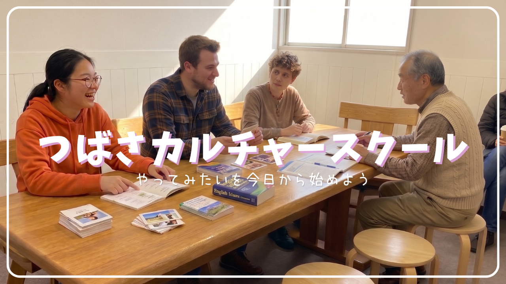
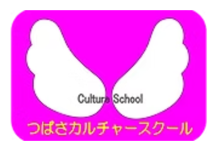
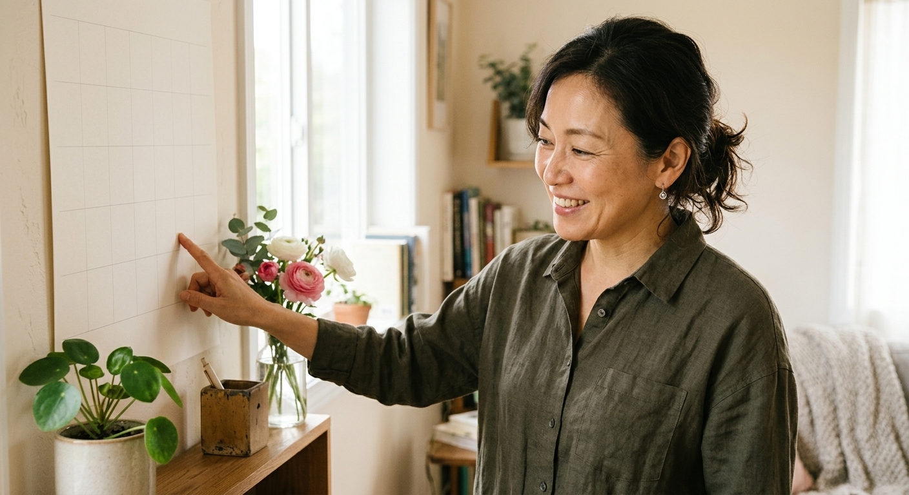
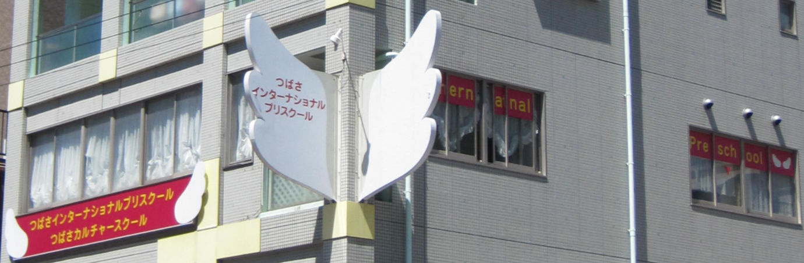

仕事や子育てが少し落ち着いた30代・40代の「学び直し」。新しい自分に出会いたい50代の「挑戦」。そして、時間にゆとりができた60代・70代、80代になっても元気に通われる方の「生きがいづくり」――。年齢もきっかけも人それぞれですが、みなさんに共通するのは「そろそろ、何か始めてみようか」という気持ちです。
そんな「そろそろ」の気持ちに、つばさカルチャースクールはそっと寄り添います。年齢を気にせず、自分のペースで、新しい一歩を踏み出せる教室です。
湊川公園駅からすぐ。雨の日や暑い日でも通いやすい立地です。
周りを気にせず、自分のペースでじっくり学べます。
英語・音楽・書道・そろばんなど、ひとつの教室でいろいろな講座から選べます。
入会金5,500円で、英語・音楽・書道・そろばんなど、どの講座からでも自由に始められます。
英字新聞・海外旅行・映画研究・洋楽など、共通の「好き」をテーマに集まる少人数（定員5名）の英語サークルです。歴史・アニメ・推し活など、自分の大好きなものを英語で語り合える仲間を見つけませんか。講師は全てネイティブ。楽しみながら英語が自然と身につきます。
①7:15〜8:00
②8:00〜8:45
③8:45〜9:30
④7:15〜8:00
⑤8:00〜8:45
⑥8:45〜9:30
ご予約はお電話にて承ります（受付時間 月〜土曜日 10:00〜19:00 日・祝休み）
担当：月・木・金曜日
「英語は『楽しい！』と感じることが上達への近道」がモットー。お絵描きや英語の早口言葉などを取り入れ、遊びながら自然に英語に親しめるレッスンを行います。子どもとの時間を大切にした、笑顔いっぱいのレッスンです。
担当：火・金曜日
「『英語を話してみたい！』その気持ちがあれば大丈夫」。実践的なレッスンを提供します。日本語での日常会話もできるので、初心者の方も安心して受講いただけます。
担当：土曜日
「英語を学ぶ時間が『楽しみな時間』になるように」。女性講師ならではの明るく親しみやすい雰囲気で、ゲームや歌を取り入れながら自然に英語を身につけます。お子さまから大人の方まで、一人ひとりに合わせて対応します。
英検対策講座 担当
オーストラリア留学の経験があり、現地で実践的に英語を使ってきた講師です。英語が得意な生徒さんはさらに伸ばし、苦手意識のある生徒さんには優しく対応。それぞれのペースに合わせて丁寧にサポートします。
ピアノ講師｜月曜日・木曜日担当
はじめてのお子様や初心者の方には、音符カードやリズム打ち、聴音などのソルフェージュで基礎をしっかり、楽しく、わかりやすく、をモットーにしています。また、将来の目標や憧れの曲など、ご希望をお伺いしています。
練習の仕方や不安なことなど、悩みが出てくるかと思いますが、レッスンの歩みは人それぞれです！諦めず、自分のペースを大事に。まずは一緒にピアノを楽しみましょう♪
ピアノ・フルート・オカリナ講師｜火曜日・水曜日・金曜日担当
音楽を通して、一人ひとりの個性を伸ばしていけるレッスンをしています。個々に合ったレッスンで、みんなが輝きや自信を持って演奏できるようになります。「自分らしさ」を発見し、音楽で表現する。これを目標にレッスンしています。
でも、まずは難しいことは考えず、楽しみましょう。音楽は楽しむためにあるのです。一緒に楽しみながら、素敵な音楽をつくっていきましょう。
ピアノ講師｜土曜日担当
「ピアノを弾きたい」「何か音楽をしてみたい」という気持ちを大切にしながら、レッスンをしていきたいと考えています。ピアノレッスンを通して、一緒に音楽を楽しんでみませんか。
バイオリン講師｜土曜日担当
バイオリンは、美しい音色を楽しみながら、集中力や表現力も自然と育ててくれる楽器です。
「楽譜が読めない」「楽器に触れたことがない」という方もご安心ください。一人ひとりのペースに合わせて、基礎から丁寧にレッスンいたします。
ドイツでの研修を経験し、現在もオーケストラや社会人カルテットで演奏活動を行っています。
習字講師
習字は、美しい文字を書く技術だけでなく、集中力や姿勢、丁寧に取り組む心も育ててくれます。
師範資格を持ち、これまで幅広い年代の方への指導に携わってきました。それぞれの目的やペースに寄り添いながら、基礎から丁寧に指導いたしますので、お子さまはもちろん、大人の方も安心して学んでいただけます。
一文字一文字を大切に、美しい文字を書く喜びを一緒に育んでいきましょう。

仕事や子育てがひと段落して、新しい一歩を踏み出したい方
昔ピアノやフルート、バイオリンを習っていて、また弾いてみたい方
「英語とピアノ、同じ日に両方通っています。一つの教室でいくつも習えるので掛け持ちがしやすいですね。ピアノとバイオリンを両方習っている方も多いんですよ。」
60代・女性／英会話講座＋ピアノ講座受講中
「大通り沿いで、学校もすぐ裏にあるので、子どもを一人で通わせても安心です。人目があるところに教室があるのがありがたいですね。」
50代・主婦（お子様が通室中）
「80代になった今も、元気に教室に通わせてもらっています。年齢を気にせず続けられるのがうれしいです。」
80代・受講中
入会金 5,500円（税込）。体験レッスンは1,100円（習字のみ500円）。一度ご入会いただければ、下記のどの講座も自由に受講いただけます。
| 講座名 | 日時 | 内容 | 月謝 |
|---|---|---|---|
| 英会話個人レッスン | 月〜土曜日 10:00〜20:00／1レッスン30分 | 講師は全てネイティブ。完全個別対応で、あなただけのオリジナルカリキュラム。対象3歳〜 | 月3回 10,600円 |
| 英会話ファミリーレッスン | 月〜土曜日 10:00〜20:00／1レッスン30分 | ネイティブ講師とご家族皆様で同じ内容のレッスン。人数に関わらずご家族ご一緒に受講可能 | 月3回 10,600円 |
| 英会話団体レッスン | 月〜土曜日 10:00〜20:00／1レッスン60分 | 仲良しのお友達やご家族だけのプライベートレッスン。人数によりお得な団体割引あり | 月3回 2組各7,500円／3組以上各6,500円 |
| イングリッシュサークル | 木曜日・月2回／1回45分 | 英字新聞・海外旅行・映画研究・洋楽など、共通の趣味をテーマにした少人数（定員5名）の英会話サークル。対象：初心者〜初中級者・全年齢 | 月2回 5,000円 |
| 英検4級 | 水曜日 16:30〜17:30／1レッスン60分 | 英検4級（中学2年生程度）合格を目指す、定員5名までのグループ講座。対象：5級合格者 | 月4回 8,000円 |
| 英検3級 | 土曜日 9:00〜11:00／1レッスン60分 | 少人数制で英作文・面接対策も。短期合格を目指し個別にカリキュラムを設計。対象：4級合格者 | 月3回 9,000円 |
| 講座名 | 日時 | 内容 | 月謝 |
|---|---|---|---|
| ピアノ個人レッスン | 月〜土曜日 10:00〜20:00／1レッスン30分 | 講師4名（音大出身・音大出身教職者・ヤマハ出身者）から選べます。対象3歳〜 | 月3回 7,200円 |
| フルート個人レッスン | 火・金曜日 10:00〜20:00／1レッスン30分 | 初めての方でも安心。体験用フルートもご用意しています。対象7歳〜 | 月3回 7,200円 |
| バイオリン個人レッスン | 月・土曜日 10:00〜15:00／1レッスン30分 | 初めての方も基礎から個別指導。3歳からシニアまでOK | 月3回 7,200円 |
| オカリナ個人レッスン | 火・金曜日 10:00〜20:00／1レッスン30分 | 初心者の方も安心。オカリナならではの豊かな音色で、基礎から様々な曲を学べます | 月3回 7,200円 |
| 講座名 | 日時 | 内容 | 月謝 |
|---|---|---|---|
| 実用ペン習字・書道 | 火曜日 15:00〜18:30／1レッスン50分 | 〈美しい文字〉を一生の財産に。初心者にも丁寧な指導で確実に上達、段・級の取得も可能。対象3歳〜大人 | 月4回 3,300円 |
| そろばん | 水曜日 17:30〜19:00／1レッスン45分 | 定員6名までの少人数制。採点待ちの行列なし。1〜2ヶ月に1回検定試験を実施 | 月4回 3,000円 |
| 個人学習 | 月〜金曜日 15:30〜18:00／1レッスン45分 | ご希望の科目を元小学校教諭がマンツーマン指導。対象：小学生 | 月3回 9,000円 |
レッスンは未経験でも大丈夫ですか？
はい、ほとんどの講座は未経験の方を対象としたコースからスタートできます。年齢を問わず、初めての方も安心してご参加いただけます。
体験レッスンには何を持っていけばよいですか？
動きやすい服装でお越しください。講座によって必要な持ち物（筆記用具など）が異なりますので、詳細はお申込み時またはお電話にてご案内いたします。
駐車場はありますか？
近隣のコインパーキングをご利用いただけます。湊川公園駅から徒歩1分ですので、公共交通機関のご利用もおすすめです。
月謝以外にかかる費用はありますか？
入会金（¥5,500）以外は特にございません。教材費等が別途必要となる講座がある場合もございますので、詳細は入会時にご確認いただけますと幸いです。
何歳から通えますか（年齢の上限はありますか）？
当スクールは大人・シニアの方に多くご参加いただいており、年齢の上限はございません。何歳からでも新しいことを始めるのに遅すぎることはありません。
振替レッスンはできますか？
振替レッスンも可能です。詳細はお気軽にお問い合わせください。

少しでも気になった方は、お気軽にお申込み・お問い合わせください。